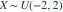
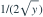
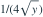
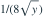
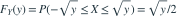
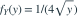

，令 。Y在0<y<4上的密度为？- A

- B

- C

- D

我已思考，展开答案与解析
正确答案：B

。- 对y求导得

，0<y<4；其余处为0。
易错提醒平方变换有正负两个原像，只计算一个会少一半。
考后回忆 · 条件重建 · 回忆15的非单调变式
依据考试回忆重建；数字、选项和必要条件为补充设定，非原题。

，令 。Y在0<y<4上的密度为？



。
，0<y<4；其余处为0。考后回忆 · 条件重建 · 回忆15的非单调变式
依据考试回忆重建；数字、选项和必要条件为补充设定，非原题。